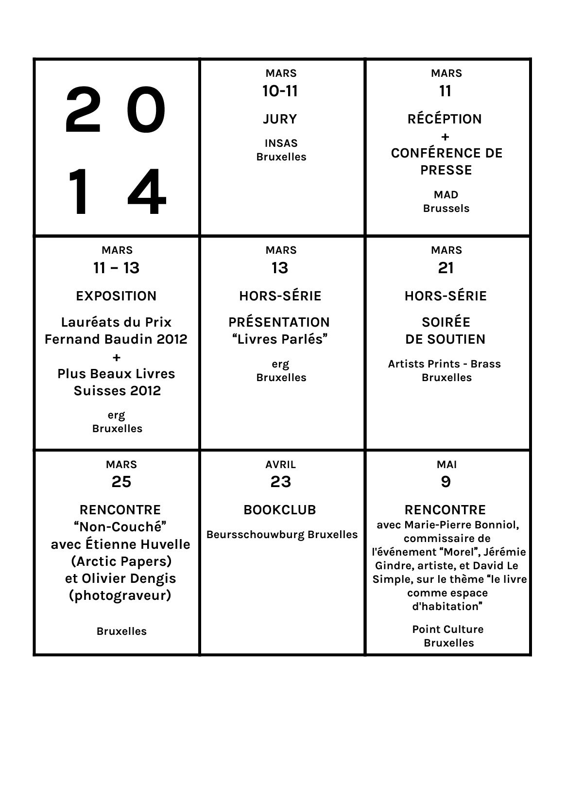
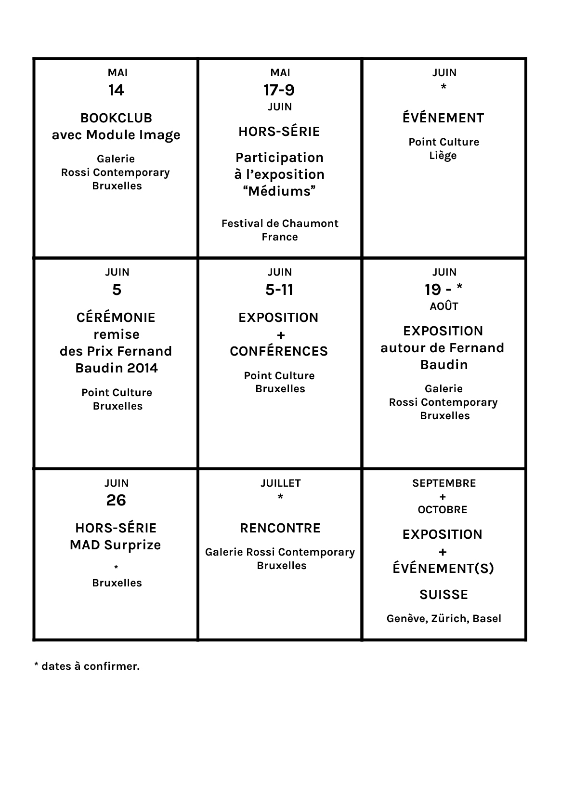
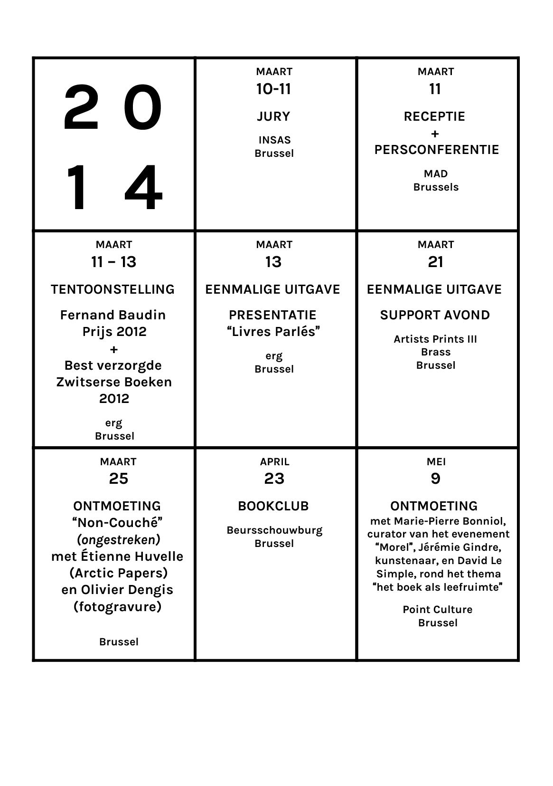
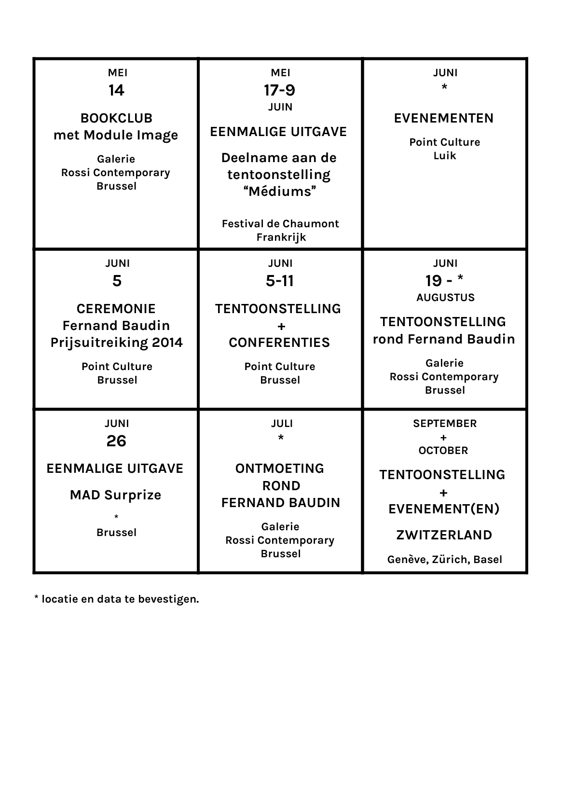
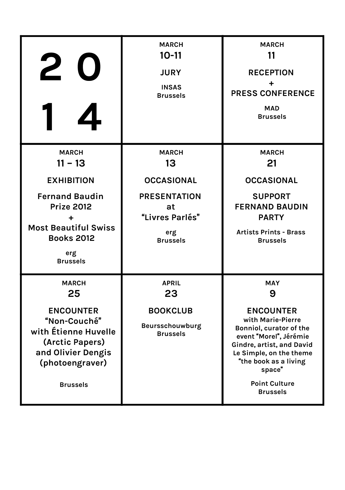
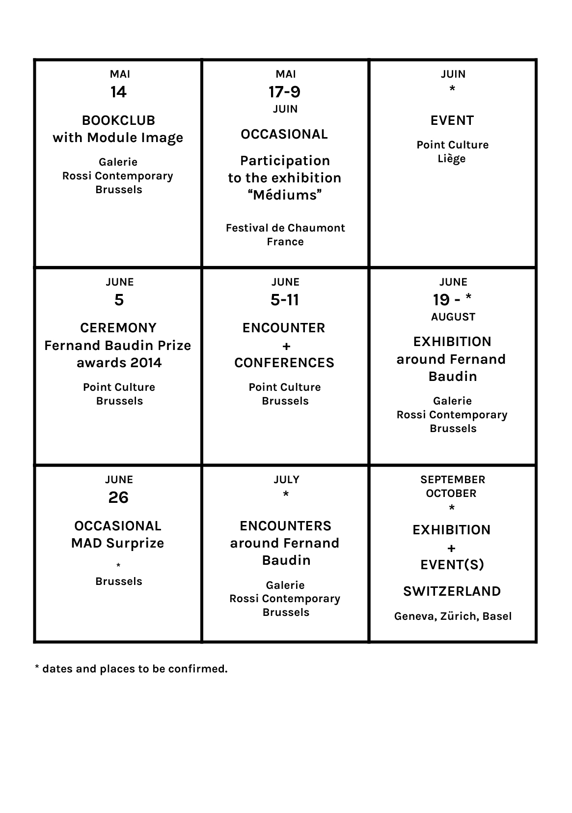

2014
événements
à venir
événements
à venir
Suisse, octobre 2014

événements
passés
passés
CÉRÉMONIE DES PRIX
2013
5 JUIN 2014
18.00
2013
5 JUIN 2014
18.00
Cérémonie, lancement du catalogue
et vernissage
Exposition
5-11 Juin 2014Séminaire avec les
lauréats 2013
6 Juin – 16.00-18.00
Intro + Fernand Baudin archi(ef)veErwan Mahéo
Théophile’s Papers
+ special launch!
Alexis Jacob
Fonds Mercator
7 Juin – 13.30-18.00
Ištvan Išt HuzjanJulie Peeters
Camille Potte & Ousseynou Salla
Mélanie Rutten
Salome Schmuki
10 Juin – 17.00-18.30
Table ronde autour despublications périodiques
ADRESSE
PointCulture Bruxelles
rue Royale 145
1000 Bruxelles
événements:

Rendez-vous avec Module Image pour un book club spécialement dédié à l’image dans le livre: celle qui raconte, éclaircit, approfondit ou complète la lecture du texte. Tour à tour narratrice, elle œuvre au récit et en révèle les sens jusqu'alors cachés; tour à tour mystérieuse, elle crée une distance pour ouvrir sur un univers, un lieu, une situation qui semblaient de prime abord extérieurs au récit. Sa fonction, loin de n'être qu'esthétique, fournit au lecteur un support qui évoque des souvenirs, des images intérieures... Les images font vivre un texte en offrant une narration parallèle et sensible.
Plus d’informations ici, sur le site de Module Image.
23.04 18.30 BOOK CLUB
Le BeursKafee accueille le club de lecture itinérant du Prix Fernand Baudin: un club ouvert à tous formats, et qui se veut l’occasion de partager réflexions et pensées autour du livre et de ses formes.
Plus d’informations ici, sur le site du Beursschouwburg.
25.03 17.00 RENCONTRE “NON COUCHÉ”
Autour de l’impression, sa préparation et du choix du papier avec Étienne Huvelle (Arctic Papers) et Olivier Dengis (photograveur), à l’imprimerie Impresor Ariane.
21.03 19.00 Soirée Fernand Baudin Party
Le Prix Fernand Baudin Prijs participe cette année au salon Artists print en invitant des acteurs du livre ayant aussi une pratique en tant que musiciens, Dj's et performers: Sandy Williams, La Houle, Le Club Des Chats, Lawrence Le Doux, Aidons Antoine.
ADRESSE Artist Print III, Brass (Forest Centre Culturel)
Avenue Van Volxem 364 B-1190 – GRATUIT
open call - partenariat:
MAD SURPRIZE!
Ouvert à tous les designers de moins de 30 ans, ce prix récompense les meilleurs designers des sections Furniture Design, Graphic Design et Interior Design, pour la qualité esthétique et prospective de leur travail.
Plus d’informations ici, sur le site du MAD.
calendrier 2014


2014
volgende
evenementen
volgende
evenementen
Switserland, october 2014
vorige
evenementen
evenementen
Prijsuitreiking
2013
Fernand Baudin Prijs
5 JUNI 2014
18.00
2013
Fernand Baudin Prijs
5 JUNI 2014
18.00
Prijsuitreiking,
opening en launch
van de catalogus
Tentoonstelling
5-11 Juni 2014Symposium met de laureaten
6 Juni – 16.00-18.00
Intro + Fernand Baudin archi(ef)veErwan Mahéo
Théophile’s Papers
+ special launch!
Alexis Jacob
Fonds Mercator
7 Juni – 13.30-18.00
Ištvan Išt HuzjanJulie Peeters
Camille Potte & Ousseynou Salla
Mélanie Rutten
Salome Schmuki
10 Juni – 17.00-18.30
Rondetafelgesprek over periodieke publicatiesADRES
PointCulture Brussel
Koningsstraat 145
1000 Brussel
evenementen:

23.04 18.30 BOOK CLUB
De Fernand Baudin Prijs introduceert een nieuw, bijkomend concept: een boekenclub. De Fernand Baudin Prijs biedt één keer per maand, op verschillende culturele plaatsen in Brussel, de gelegenheid om ideeën en gedachten over boeken te delen en uit te wisselen.
meer informaties hier, op de website van Beursschouwburg.
25.03 17.00 RENCONTRE “NON COUCHÉ”
met Étienne Huvelle (Arctic Papers) en Olivier Dengis (fotogravure).
21.03 19.00 Soirée Fernand Baudin Party
Ontdek de muzikale kant van de Prix Fernand Baudin Prijs na een bezoek van Artists Prints: Sandy Williams, La Houle, Le Club Des Chats, Lawrence Le Doux, Aidons Antoine.
ADRES Artist Print III, Brass (Forest Centre Culturel)
Avenue Van Volxem 364 B-1190 – GRATIS
open call - partenariat:
MAD SURPRIZE!
Deze prijs staat open voor alle designers onder de 30 en bekroont de beste designers in de categorieën Furniture Design, Graphic Design en Interior Design voor de esthetische en vooruitstrevende kwaliteit van hun werk.
Meer informaties hier, op de website van MAD.


2014
next
events
next
events
Switzerland, October 2014
past
events
events
Awards
Ceremony
2013
Fernand Baudin Prize
5th June 2014
18.00
Ceremony
2013
Fernand Baudin Prize
5th June 2014
18.00
Awards Ceremony,
opening and
launch of the catalogue
Exhibition
5-11th June 2014Symposium with the
Award-winners
6th June – 16.00-18.00
Intro + Fernand Baudin archi(ef)veHerman Byrd
Erwan Mahéo
Théophile’s Papers
+ special launch!
Alexis Jacob
Fonds Mercator
7th June – 13.30-18.00
Ištvan Išt HuzjanJulie Peeters
Camille Potte & Ousseynou Salla
Mélanie Rutten
Salome Schmuki
10th June – 17.00-18.30
Pannel Talk on periodical publicationsADDRESS
PointCulture Brussels
rue Royale 145
1000 Brussels
events:

23.04 18.30 BOOK CLUB
This year, the Fernand Baudin Prize introduces a new, additional concept: a book club. Once a month, at various cultural locations, the Fernand Baudin Prize provides an opportunity to share and exchange ideas and opinions about books.
The idea is simple: bring along a book and introduce it to the others. Give a short presentation, exchange opinions about the design, read an excerpt aloud, add a personal anecdote or an in-depth analysis: all stories and contributions are welcome.
more information here, on Beursschouwburg’s website.
25.03 17.00 RENCONTRE “NON COUCHÉ”
“Non-Couché” with Étienne Huvelle (Arctic Papers) and Olivier Dengis (photoengraver).
21.03 19.00 Soirée Fernand Baudin Party
Explore the musical side of the Prix Fernand Baudin Prijs after visiting the opening of Artists Print with Fernand Baudin special guests: Sandy Williams, La Houle, Le Club Des Chats, Lawrence Le Doux, Aidons Antoine.
ADDRESS Artist Print III, Brass (Forest Centre Culturel)
Avenue Van Volxem 364 B-1190 – FREE
open call - partenariat:
MAD SURPRIZE!
YOUNG BELGIAN DESIGN PRIZE
more information here, on MAD’s website.

